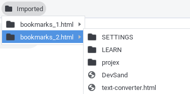
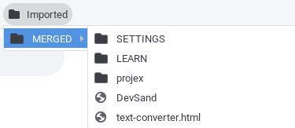
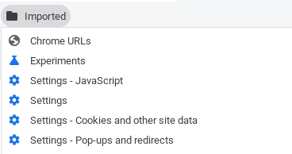
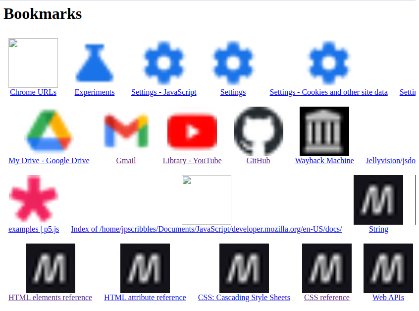

Browser Bookmarks Manager
When you have an excess of bookmarks, the bookmarks merger can remove duplicates and restructure your bookmarks.
Duplicates
Keep Duplicates
Remove Duplicates
Bookmark Structure
File (lists all of your bookmark files as folders.)

Folder (merges duplicate bookmark folders)

Line (removes folders and lists every bookmark)

README (a README that contains images
of all the bookmarks as links.)

Merge Your Bookmarks
texthere
DOWNLOAD BOOKMARKS